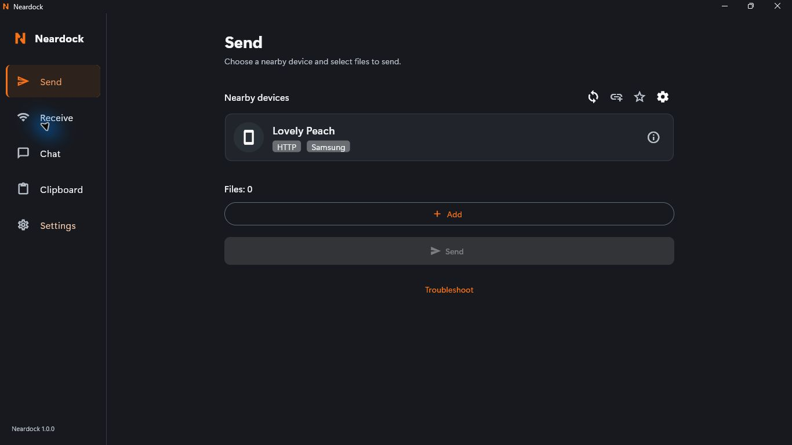
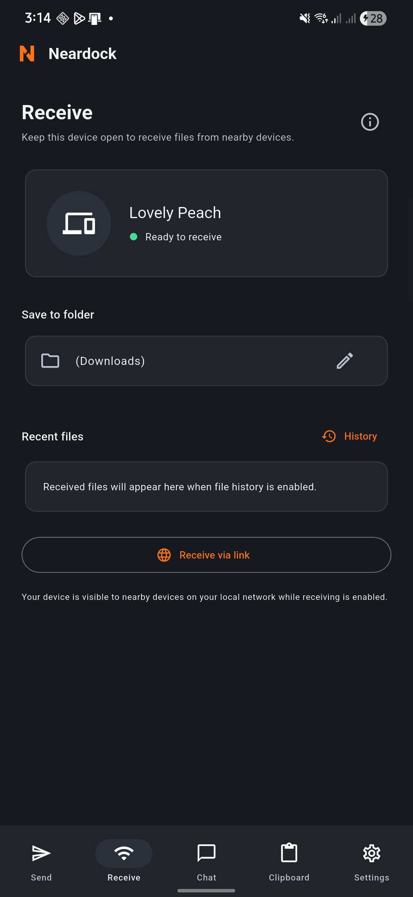

The files you need
Move a photo to your PC or a document to your phone. Choose the recipient and destination, then keep working.
Neardock — Share files between nearby devices.
Files, a quick message, or the text you just copied. Move it between Windows and Android on your own local network.
No account · Local transfers work without internet

Choose a file. Keep a conversation. Send a snippet. The same familiar tools follow you from desktop to phone.

Actual Neardock 1.0.0 screens captured on Windows and Android. Detailed build and device verification is recorded with the release.
Move a photo to your PC or a document to your phone. Choose the recipient and destination, then keep working.
Send a quick note or link in Chat. Conversation history stays on your device and can be cleared or disabled.
Paste, review, send, copy. Transfer text when you choose, without automatic clipboard monitoring.
Wi-Fi at home, a shared local network, or a compatible hotspot. Ordinary local transfers don’t need mobile data or an internet connection.
Connection and installation helpConnect your Windows PC and Android phone to the same network.
Select a recipient and add files, or open Chat or Clipboard for text.
Approve the request and check where the files were saved.
Neardock 1.0.0 is available for Windows x64 and Android. Downloads include signing status, checksums and verification evidence.